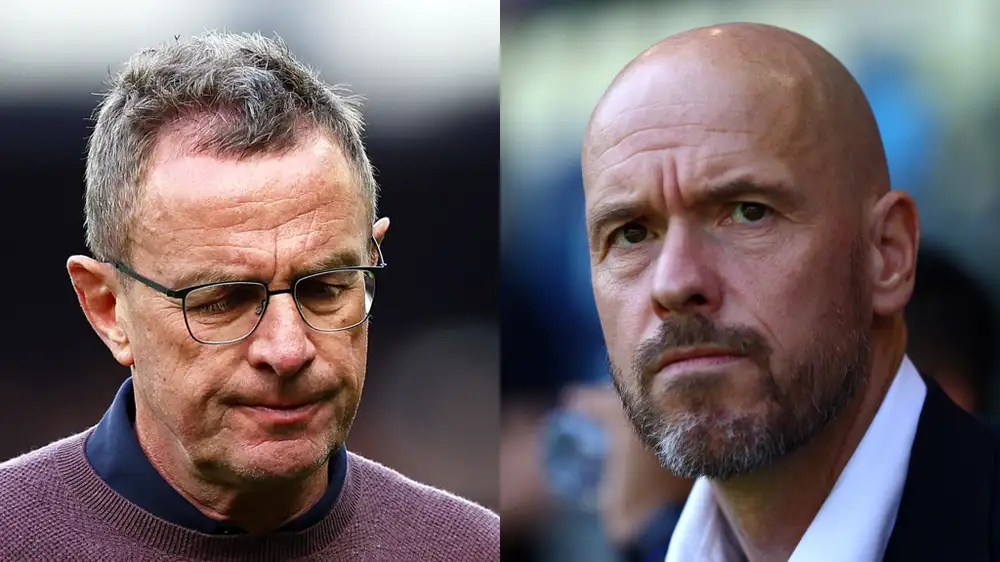
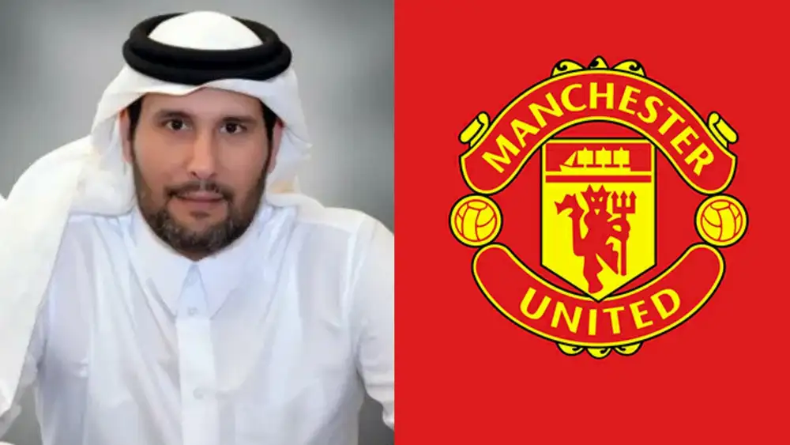

Bola Gol!
Trending News
Champions League
Premier League
Trending News
Indonesia BATAL Jadi Tuan Rumah Piala Dunia U-20, Terancam Sanksi
Indonesia dipastikan tidak akan menggelar Piala Dunia U-20 2023 setelah FIFA resmi membatalkan status Indonesia sebagai tuan rumah. Keputusan ini ...
Kronologi Batalnya Indonesia Jadi Tuan Rumah Piala Dunia U-20 2023
Kekhawatiran itu akhirnya benar-benar terjadi. Indonesia batal menggelar Piala Dunia U-20 2023 setelah status sebagai tuan rumah resmi dicopot FIFA...
Pelatih Israel U-20: Akhirnya Piala Dunia Dipindah Dari Indonesia
Pelatih Israel U-20 Ofir Haim mengungkapkan kelegaannya dengan keputusan FIFA yang mencoret Indonesia sebagai tuan rumah Piala Dunia U-20 2023, dan berharap...
Champions League
Sindiran Keras! Klub Arab Saudi EJEK Lionel Messi, Bawa-Bawa Bayern Munich!
Cuma DUA Tim Ini Yang Bisa Cegah Manchester City Juara Liga Champions
Hasil Drawing Perempat-Final Liga Champions: Final Kepagian? Chelsea Vs Real Madrid, Manchester City Vs Bayern Munich!
Premier League
David De Gea MENOLAK Tawaran Perpanjangan Kontrak Manchester United

Karena Sabitzer, Ralf Rangnick Puji Bos Man United Erik Ten Hag

Sheikh Jassim Bin Hamad Al Thani Ajukan Penawaran Kedua Untuk Manchester United